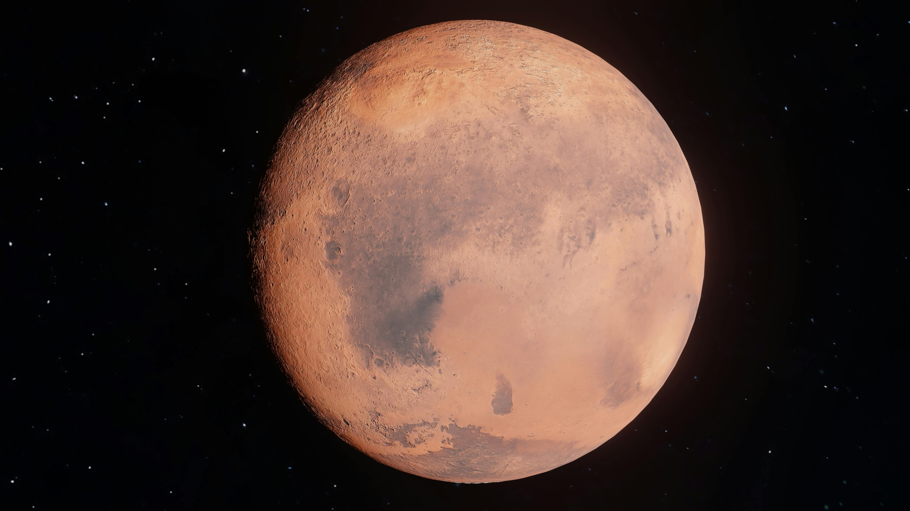
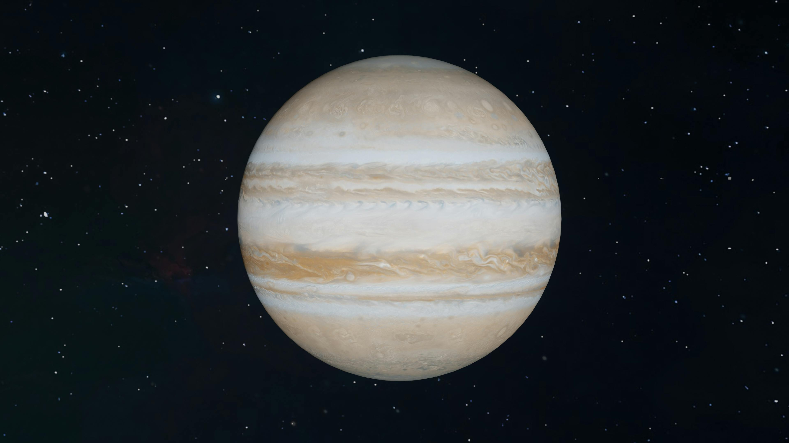

Gezegen Bilgisi
Çalışma deneyiminizi daha keyifli hale getirmeyi hedefleyen Cosmic Focus Website ile gezegenler üzerinden farklı pomodoro teknikleriyle odak sürenizi ve çalışma veriminizi estetik biçimde geliştirebilmeyi ve desteklemeyi hedefler. Seçtiğiniz gezegene göre falan pomodoro biçimlerini kullanabilirsiniz.
Lütfen gezegeninizin özelliklerini mouse ile üzerine gelerek öğreniniz.
Seçtiğiniz gezegene tıklayarak çalışmaya başlayabilirsiniz.




Dünya
Balanced Focus Mode
25 DK ÇALIŞMA
5 DK MOLA
Klasik pomodoro tekniği ile dengeli bir çalışma deneyimi.